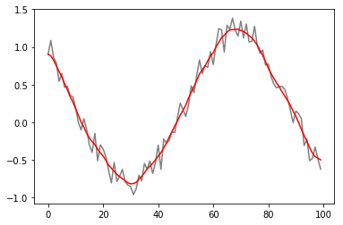

- using a low-pass filter
def lpfilter(input_signal, win):
# Low-pass linear Filter
# (2*win)+1 is the size of the window that determines the values that influence
# the filtered result, centred over the current measurement
from scipy import ndimage
kernel = np.lib.pad(np.linspace(1,3,win), (0,win-1), 'reflect')
kernel = np.divide(kernel,np.sum(kernel)) # normalise
output_signal = ndimage.convolve(input_signal, kernel)
return output_signalfrom pylab import plt
import numpy as np
### make up some data
t=np.linspace(-4,4,100)
x=np.sin(t)
unsmoothed = x+np.random.rand(len(t))*0.4
### smooth data using def
smoothed = lpfilter(unsmoothed,5)
print(unsmoothed.shape, smoothed.shape)
### plot data
plt.subplot(111)
plt.plot(unsmoothed, 'k', alpha=0.5)
plt.plot(smoothed, 'r')
plt.show()((100,), (100,))
